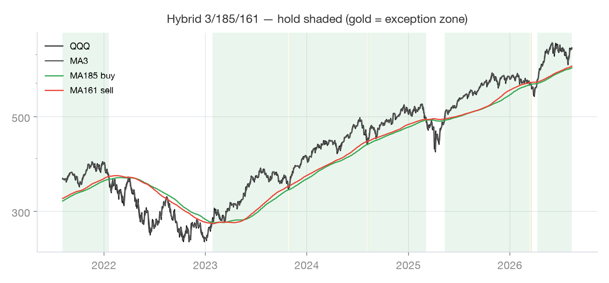
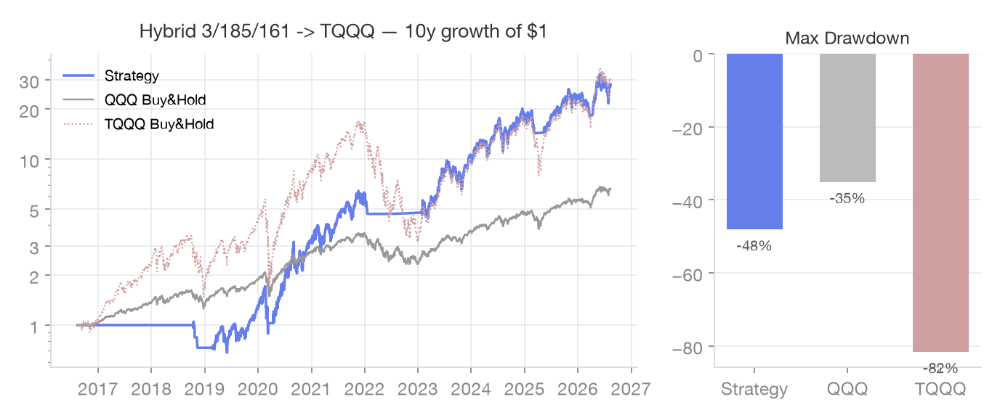

고승률
하이브리드 3,185/161
매수선(185)과 매도선(161)을 분리한 비대칭 전략 — "161을 다시 넘었다고 사지 마라"가 핵심입니다.
작동 원리
QQQ 3일선이 185일선을 넘을 때만 매수하고, 161일선을 깨야만 매도하는 비대칭 구조입니다. 원저자의
분석에서 "161선을 회복했지만 185선을 못 넘는" 재회복 이벤트는 역사적으로 전부 손실이어서, 매수 문턱을 185로
올려 가짜 신호를 걸러냅니다. 앱은 여기에 역배열(161선이 185선 위) 구간의 예외 진입 상태를 더한 상태머신으로
구현되어 있습니다: 역배열에서 3일선이 두 기준선 사이에 들어오면 예외 보유로 진입하고, 예외 보유 중에는 185선
이탈 시 매도, 161선 상향 돌파 시 일반 보유로 전환합니다. 당일 재진입은 금지됩니다.
신호 자산 · 매매 자산
| 신호(차트) 기준 | QQQ · 3일선 vs 185일선(매수)/161일선(매도) |
|---|
| 실제 매매 | TQQQ (나스닥 3배) |
|---|
| 매도 후 대기 | SGOV (단기 국채) |
|---|
규칙
| 매수 | QQQ 3일선이 185일선 상향 돌파 → 보유 |
|---|
| 예외 진입 | 역배열(161선>185선)에서 3일선이 두 선 사이 → 예외 보유 |
|---|
| 매도 | 보유 중 3일선<161선 / 예외 보유 중 3일선<185선 |
|---|
| 전환 | 예외 보유 중 3일선이 161선 상향 돌파 → 일반 보유 |
|---|
| 기타 | 당일 재진입 금지 |
|---|
실데이터 차트

최근 5년 · 초록 음영 = 보유 구간

최근 10년 · $1 성장 시뮬레이션 (세금·수수료 미반영)
자주 묻는 질문
- 매수선과 매도선을 왜 분리하나요?
- 원저자 백테스트에서 "3일선이 161선을 넘었다고 바로 사는" 케이스 중 185선까지 못 가는 실패 이벤트는 7회 전부 손실(평균 −7.6%)이었습니다. 매수만 문턱을 높이면 이런 구간을 피하면서 이탈은 빠르게 가져갑니다.
- 원글의 5% 밴드 매수 변형도 있나요?
- 원글에는 Envelope 밴드를 활용한 공격적 변형이 소개돼 있지만, 앱은 예외 배열 상태머신을 채택한 최신 구현을 기준으로 합니다.
- 예외 배열이 정확히 뭔가요?
- 보통은 161일선이 185일선 아래에 있지만, 급락 직후 회복기에는 순서가 뒤집힙니다(161선이 위). 이 역배열 구간에서 3일선이 두 선 사이로 들어오면 회복 랠리를 놓치지 않도록 "예외 보유"로 진입합니다 — 이때는 매도선도 185선으로 바뀝니다.
- 손절이 자주 나오면 어떡하죠?
- 매도선(161선)이 무너지면 기계적으로 나가는 것이 이 전략의 방어 장치입니다. 손절이 아프더라도 목적은 깊은 낙폭(MDD) 방어입니다 — 원저자도 손절 구간을 겪으며 이 규칙을 유지했습니다.
출처
본 페이지의 백테스트 차트는 야후 파이낸스 일봉(최근 10년, 배당 조정 종가)으로 앱의 규칙을 재현한
참고 자료입니다. 세금·수수료·호가 슬리피지를 반영하지 않았고, 과거 성과는 미래 수익을 보장하지 않습니다.
규칙 서술과 실제 신호는 항상 앱의 최신 구현을 기준으로 합니다. 본 콘텐츠는 투자 자문이 아니며, 투자 판단과
책임은 이용자 본인에게 있습니다.
앱에서 이 전략 켜기 → 설정 · 전략 선택